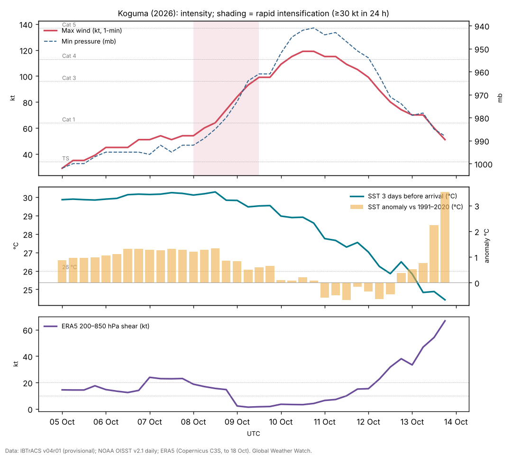

Typhoon Koguma (October 2026): an El Niño typhoon over the open Pacific
Abstract
Koguma (Typhoon No. 29 in the JMA numbering) was a powerful typhoon that stayed over the open western North Pacific throughout its life. It formed on 5 October near 10.5°N, 168.0°E, far to the east, as is typical of strong El Niño years, moved northwest across water about +0.9 °C warmer than normal, and intensified rapidly by 35 kt in 24 hours on 8–9 October. It peaked at 119 kt (135 mph, Category 4 equivalent) and 941 mb at 10 Oct 1200 UTC over the open ocean, then recurved north and northeast and weakened over cooler water, leaving the tropics by 13 October. No land was threatened; NWS Guam issued no watches or warnings. At the same time, the remnant of eastern Pacific Hurricane Nolo, which had crossed the date line, lay 700–1,300 km to the north and northwest; forecasters cited it as one influence on Koguma's turn north. Koguma contributed 22 × 10⁴ kt² of ACE to a western Pacific season running 41% above normal.
Main findings
- Southeastern genesis. Koguma formed at 10.5°N, 168.0°E, in the southeastern quadrant of the basin where strong El Niño events concentrate tropical-storm formation [5].
- Rapid intensification over warm water. Winds rose from 54 kt to 99 kt in 36 hours and reached 119 kt a day later; the sea ahead of the storm averaged 29.8 °C (+0.9 °C) up to the peak.
- An intense, long-lived typhoon. 120 hours at typhoon strength and 66 hours at Category 3-equivalent or above, consistent with the tendency of El Niño years to produce more intense, longer-lived typhoons [6].
- A neighbour across the date line. The remnant of Hurricane Nolo came within 731 km of Koguma on 11 Oct 1200 UTC; its role in Koguma's recurvature is plausible but untested.
- No land impacts. The closest land was about 650 km away (Iwo To); the hazard was to shipping.
1. Introduction
The 2026 western North Pacific season had produced 25 named storms and 13 typhoons, 9 of them reaching Category 3 equivalent or stronger, by 23 October, with ACE of 337 × 10⁴ kt² against a normal of 239 for the date [8]. During strong El Niño events, typhoons tend to form farther southeast, closer to the date line, and to last longer and become more intense [5], [6]; 2026 is a very strong El Niño [9]. Koguma is a clear example of this type: a typhoon born east of 165°E that never approached land. This paper documents its life cycle and the ocean beneath it.
2. Data and methods
Track and intensity. Six-hourly positions, 1-minute maximum sustained winds and minimum pressures from IBTrACS v04r01 [1], downloaded on 24 October 2026. For 2026 these are provisional values carried over from the operational advisories (JTWC for the 1-minute winds; the Japan Meteorological Agency is the WMO centre, and its 10-minute winds are lower); the official best track, issued in the post-season report, can differ. Rapid intensification (RI) is an increase of at least 30 kt in 24 hours [2]. Accumulated cyclone energy (ACE) sums the squared 6-hourly winds at tropical-storm strength or above.
Ocean. Sea-surface temperature (SST) and its anomaly against 1991–2020 from NOAA OISST v2.1 daily [3], sampled at each 6-hourly position three days before the storm arrived, so that the storm's own cooling is excluded; the change from three days before to three days after gives the cold wake. OISST is a 0.25° analysis and smooths very small wakes.
Atmosphere. No forecast-discussion archive comparable to NHC's was available for this typhoon, so the atmosphere is described only by the ERA5 shear below; mid-level humidity is not documented. In addition, the deep-layer (200–850 hPa) vertical wind shear was computed from ERA5 (Hersbach et al. 2020, in the references) as the difference of the winds averaged over a 200–800 km ring around each position, using daily means of 00 and 12 UTC on a 2.5° grid, with data to 18 October 2026. This coarse estimate captures the large-scale shear but not shallower or mid-level shear, which forecasters sometimes cite. The Madden–Julian oscillation (MJO) is described by the real-time RMM index [4] (phase and amplitude; amplitude ≥ 1 means an active MJO). ENSO values are NOAA CPC indices (RONI JAS 2026 +1.69 °C; weekly relative Niño 3.4 +2.4 °C in mid-October).
Impacts. Deaths, damage and observations are taken from official statements where available and otherwise from wire-service reports, each cited; figures are preliminary.
3. Life cycle

Formation and slow development (5–8 October). IBTrACS begins at 5 Oct 0000 UTC near 10.5°N, 168.0°E, in the northern Marshall Islands, with 29 kt winds. Koguma moved north-northwest, then west-northwest, and remained a tropical storm of 45–55 kt for three days. On 9 October JMA analysed it as a typhoon of 990 hPa with 75 kt 10-minute winds, about 650 km southwest of Minamitorishima, moving west-northwest at 11 kt, and forecast further deepening to 955 hPa [12].
Rapid intensification (8–10 October). Koguma reached typhoon strength at 8 Oct 1200 UTC and then intensified by 35 kt in the 24 hours to 9 Oct 1200 UTC, reaching 119 kt and 941 mb at 10 Oct 1200 UTC near 22.9°N, 149.6°E. On 11 October NWS Guam still gave about 130 mph (115 kt), with typhoon-force winds extending about 72 km and tropical-storm-force winds about 193 km from the centre [13].
Recurvature and transition (11–13 October). Koguma turned north on 11–12 October and accelerated north-northeast, weakening below typhoon strength by midday on 13 October as it moved over water below 26 °C near 35°N. The last IBTrACS fix is at 13 Oct 1800 UTC near 38.3°N, 157.2°E with 51 kt; JMA declared it extratropical at 0000 UTC on 14 October near 39°N, 159°E [11].
| Quantity | Value |
|---|---|
| Source of winds and pressures | JTWC 1-minute values (IBTrACS USA fields); JMA is the WMO centre |
| First and last fix (UTC) | 5 Oct 0000 UTC – 13 Oct 1800 UTC |
| First fix position | 10.5°N, 168.0°E |
| Peak 1-minute wind | 119 kt (135 mph, 220 km/h), Category 4, 10 Oct 1200 UTC near 22.9°N, 149.6°E |
| Lowest pressure | 941 mb |
| Largest 24-hour increase | 35 kt (8 Oct 1200 UTC to 9 Oct 1200 UTC) |
| Time at tropical-storm / hurricane / major strength | 210 / 120 / 66 hours |
| Accumulated cyclone energy (ACE) | 22.3 × 10⁴ kt² |
| Track length and mean speed | 4,641 km at 22.1 km/h |
| JMA preliminary peak | 950 hPa and 45 m/s (87 kt, 10-minute), from 10 Oct; extratropical by 14 Oct 0000 UTC |
| JMA analysis, 9 Oct 0405 UTC | 990 hPa, 75 kt (10-minute), 18.8°N, 156.1°E |
| Closest approach to land | about 650 km east of Iwo To (11 Oct, NWS Guam) |
IBTrACS v04r01, provisional JTWC values; JMA values from its preliminary track table.
4. Environment
Ocean. Up to the peak, the sea three days ahead of Koguma averaged 29.8 °C and never fell below 28.9 °C, +0.9 °C above the 1991–2020 normal on average. North of 30°N, after recurvature, it fell to about 24 °C. Moving at a mean 22.1 km/h, much faster than the eastern Pacific hurricanes of the same weeks, Koguma left only a weak cold wake in the analysis (up to 1.1 °C) [7].
MJO. The RMM index was in phase 1 (amplitude 1.1) at formation and phase 2 (1.0) during rapid intensification, with the MJO's active convection over the Indian Ocean rather than the western Pacific; Koguma's development therefore did not depend on an active MJO overhead.
ERA5 shear. The reanalysis fills part of the gap: deep-layer shear around Koguma was 12–24 kt from 5 to 8 October, while it stayed a tropical storm, and then fell to 1–4 kt on 9–10 October, exactly when it intensified rapidly and peaked. After recurvature the shear rose above 30 kt on 13 October (Figure 1). The timing points to the drop in shear as the trigger of rapid intensification over already warm water.
Nolo. Hurricane Nolo, first tracked in the eastern Pacific on 10 September, and crossed the date line in early October, weakened as it moved west near 25–32°N. Its separation from Koguma fell from about 2,000 km on 5 October to 731 km on 11 Oct 1200 UTC. Two cyclones within about 1,000 km can influence each other's motion; NWS Guam reportedly cited the interaction as a main factor in Koguma's northward turn [13]. A mid-latitude trough is the usual cause of recurvature at this latitude, and the relative roles were not analysed here.
5. Koguma among the 2026 typhoons
The table lists the 13 western Pacific storms of 2026 that reached typhoon strength in IBTrACS. 8 of them were first tracked east of 150°E, and the mean first-fix longitude was 153°E. Koguma's first fix (168°E) was among the farthest east, and its ACE (22.3) ranks 6 of 13. A comparison with the 1991–2020 distribution of first-fix positions would be needed to call the eastward shift unusual; that is left for the season overview.
| Typhoon | First fix (UTC date) | First-fix position | Peak (kt, 1-min) | ACE | Hours as typhoon |
|---|---|---|---|---|---|
| Sinlaku | 2026-04-09 | 8.7°N, 152.1°E | 154 | 39.9 | 174 |
| Jangmi | 2026-05-27 | 9.6°N, 137.5°E | 74 | 8.0 | 48 |
| Mekkhala | 2026-06-18 | 12.2°N, 145.1°E | 124 | 16.3 | 84 |
| Bavi | 2026-07-01 | 8.7°N, 163.3°E | 154 | 53.0 | 216 |
| Noul | 2026-07-23 | 17.4°N, 128.4°E | 84 | 4.6 | 42 |
| Dolphin | 2026-07-27 | 12.8°N, 178.3°E | 144 | 56.9 | 300 |
| Saudel | 2026-08-18 | 7.9°N, 154.9°E | 115 | 23.2 | 156 |
| Bang-Lang | 2026-08-26 | 17.2°N, 161.3°E | 74 | 4.8 | 36 |
| Dujuan | 2026-09-15 | 14.9°N, 148.9°E | 70 | 9.1 | 66 |
| Surigae | 2026-09-23 | 16.0°N, 138.4°E | 128 | 13.5 | 66 |
| Choi-Wan | 2026-09-30 | 15.6°N, 151.9°E | 134 | 21.1 | 120 |
| Koguma | 2026-10-05 | 10.5°N, 168.0°E | 119 | 22.3 | 120 |
| Champi | 2026-10-14 | 9.6°N, 161.2°E | 159 | 38.3 | 132 |
IBTrACS v04r01, provisional JTWC values; first fix may be a precursor disturbance. Champi was still active at the data cutoff.
6. Impacts
Koguma stayed over open ocean. NWS Guam listed no watches or warnings for Guam or the Northern Mariana Islands [13], and no damage or casualties were reported. Weathernews warned of expanding storm-force winds and severe gusts on trans-Pacific shipping routes [12]. No ship incidents were found in the sources consulted.
7. Climate context
Koguma fits the El Niño pattern in the western North Pacific: genesis in the southeast of the basin [5], a long track over warm water and high intensity [6]. The western Pacific season's ACE was 41% above normal by late October [8]. No attribution study exists for Koguma.
8. Uncertainties
- Intensities are provisional. JTWC (1-minute, 119 kt, 941 mb) and JMA (10-minute, 87 kt, 950 hPa) differ in method as well as value; both will be revised.
- Shear comes from ERA5 on a coarse grid; mid-level humidity and shallow shear are not documented for this storm.
- The influence of Nolo is reported second-hand and not tested.
9. Conclusion
Koguma was a textbook El Niño typhoon: born far to the southeast, it travelled more than 4,600 km over warm water, intensified rapidly to Category 4 strength and recurved without touching land. It shows the intensity the basin can produce in a strong El Niño year even when the outcome is harmless.
Media evidence (links)
Videos, photographs, satellite images and news reports that document the storm. They are supporting evidence only: the analysis above does not rely on them, and the material belongs to its publishers, so it is linked rather than copied. Press videos and social-media clips are not independently verified.
| Type | What it shows | Source | Link |
|---|---|---|---|
| Official data | JMA preliminary track and intensity table, every 3 hours (Typhoon No. 29) | Japan Meteorological Agency | www.data.jma.go.jp |
| Satellite imagery and track | Satellite loops and the track | Zoom Earth | zoom.earth |
| News | JMA analysis and forecasts, 9 Oct | Weathernews | sea.weathernews.com |
| News | NWS Guam advisory summary, 11 Oct | Pogodnik | pogodnik.com |
Evidence table
| Factor | Observed conditions and timing | Proposed role | Evidence type | Confidence | Key sources |
|---|---|---|---|---|---|
| ERA5 deep-layer shear | 12–24 kt on 5–8 Oct, 1–4 kt on 9–10 Oct | Its drop coincided with rapid intensification | Reanalysis (ERA5); timing | Medium | [10] |
| Southeastern genesis | First fix 10.5°N, 168.0°E | Long track over warm water | Observed; literature for the El Niño shift | High | [1] [5] |
| Warm ocean | SST 29.8 °C (+0.9) up to the peak | Supported rapid intensification | Observed (OISST) | High | [3] |
| Fast motion | Mean 22.1 km/h | Limited self-induced cooling | Observed; physical reasoning | Medium | [7] |
| Nolo remnant | Within 731 km on 11 Oct 1200 UTC | Possible influence on recurvature | Reported (secondary); untested | Low | [13] |
| El Niño background | Very strong El Niño; basin ACE 41% above normal | Favours intense, long-lived typhoons | Climatological reasoning | Medium | [6] [8] |
References
- Knapp, K. R., M. C. Kruk, D. H. Levinson, H. J. Diamond and C. J. Neumann (2010). The International Best Track Archive for Climate Stewardship (IBTrACS). Bulletin of the American Meteorological Society 91, 363–376. Data: IBTrACS v04r01, NOAA NCEI (2026 positions provisional). doi:10.1175/2009BAMS2755.1 [bibliographic record; data read]
- Kaplan, J., and M. DeMaria (2003). Large-scale characteristics of rapidly intensifying tropical cyclones in the North Atlantic basin. Weather and Forecasting 18, 1093–1108. doi:10.1175/1520-0434(2003)018<1093:LCORIT>2.0.CO;2 [abstract read]
- Huang, B., et al. (2021). Improvements of the Daily Optimum Interpolation Sea Surface Temperature (DOISST) Version 2.1. Journal of Climate 34, 2923–2939. Data via NOAA PSL. doi:10.1175/JCLI-D-20-0166.1 [abstract read; data read]
- Wheeler, M. C., and H. H. Hendon (2004). An all-season real-time multivariate MJO index: development of an index for monitoring and prediction. Monthly Weather Review 132, 1917–1932. doi:10.1175/1520-0493(2004)132<1917:AARMMI>2.0.CO;2 [abstract read]
- Wang, B., and J. C. L. Chan (2002). How strong ENSO events affect tropical storm activity over the western North Pacific. Journal of Climate 15, 1643–1658. doi:10.1175/1520-0442(2002)015<1643:HSEEAT>2.0.CO;2 [abstract read]
- Camargo, S. J., and A. H. Sobel (2005). Western North Pacific tropical cyclone intensity and ENSO. Journal of Climate 18, 2996–3006. doi:10.1175/JCLI3457.1 [abstract read]
- Price, J. F. (1981). Upper ocean response to a hurricane. Journal of Physical Oceanography 11, 153–175. doi:10.1175/1520-0485(1981)011<0153:UORTAH>2.0.CO;2 [abstract read]
- Colorado State University, Department of Atmospheric Science: real-time tropical cyclone season statistics (ACE and storm counts to date by basin), read 22–23 October 2026; site copy data/ace_season.csv. https://tropical.atmos.colostate.edu/Realtime/ [data read]
- Global Weather Watch (2026). The 2026 El Niño against 1982–83, 1997–98 and 2015–16: a preliminary comparison (Paper 4). enso-2026.html [own analysis]
- Hersbach, H., et al. (2020). The ERA5 global reanalysis. Quarterly Journal of the Royal Meteorological Society 146, 1999–2049. 2026 data: Copernicus Climate Change Service Climate Data Store (u, v at 850 and 200 hPa, to 18 October 2026). doi:10.1002/qj.3803 [full text read (open access); data processed]
- Japan Meteorological Agency (2026). Typhoon No. 29 (KOGUMA) preliminary best track, 3-hourly (T2629, preliminary values). https://www.data.jma.go.jp/typhoon/data/T2629.pdf [read]
- Weathernews (2026). Typhoon No. 29 (Koguma) (JMA observations and forecasts, 9 October 2026). https://sea.weathernews.com/resources/202610/269 [read]
- Pogodnik (2026). Typhoon Koguma heads north with 130 mph winds (summarising NWS Guam advisories, 11 October 2026). https://pogodnik.com/en/news/typhoon-koguma-2026-130-mph-winds-forecast-track [read; secondary source]